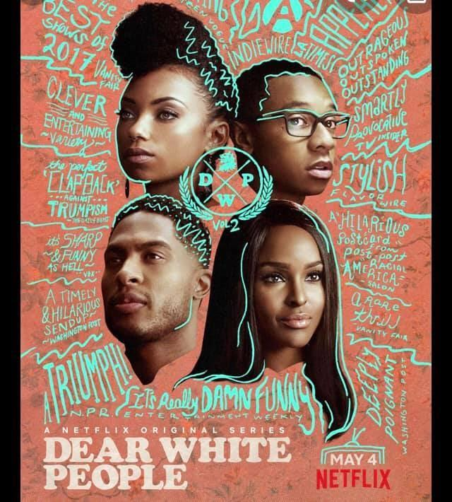

<section class="article-netflix py-5">
  <div class="container">
    <div class="row justify-content-center">
      <article class="col-sm-8">
        <h2>Dear white people</h2>
        <h5>Des étudiants noirs font face au racisme dans une prestigieuse faculté américaine, 24 novembre 2020</h5>

        <p>
          Série US avec 3 volumes disponibles depuis 2019 sur Netflix pour 16 ans et plus
        </p>

        <p>
          J’ai besoin  de me cultiver régulièrement pour bien comprendre l'origine de certains fléaux qui divisent les peuples et rendent souvent la discussion presque impossible suite aux souffrances et humiliations subies depuis des siècles par une partie de la population terrestre. <br>
          Dear white people, série disponible sur Netflix, aborde assez durement le racisme subie par les noirs depuis bien longtemps déjà.
        </p>

        <div class="article_img">
          
        </div>

        <p>
          <strong class="emphase">Le pitch :</strong>
          Basée sur le film à succès éponyme, cette série suit un groupe d'étudiants de couleur à l'Université de Winchester. Ils sont confrontés à un paysage de préjugés culturels, d'injustice sociale, d'activisme mal-avisé et de politique glissante. Le prestigieux campus universitaire de Winchester, en proie aux rivalités, aux amours et aux crises identitaires, fait face à une nouvelle révolution. Animatrice d'une émission de radio qui suscite la polémique au sein de l'école, Sam White dénonce les injustices.
        </p>

        <p>
          <strong class="emphase">Mon avis :</strong>
          Certains trouveront sûrement ces 3 volumes présents sur Netflix, caricaturaux ou exagérés mais je rappelle que tant que l’on n’est pas noir aux USA, il est difficile de comprendre comment fonctionne la psyché de personnes souvent brimées, humiliées, flouées, exclues de la société juste pour leur couleur de peau. Je ne mets pas à la place des noirs, se serait les insulter et pas les respecter, mais si déjà, j’ai moi même ce dégoût et cette honte pour une partie de l’humanité qui se croit supérieure en toute chose alors j’imagine même pas ce que les noirs américains ressentent dans leur chair et leurs âmes.
        </p>

        <p>
          Ces 3 volumes montrent clairement le fonctionnement souvent sous-jacent et hypocrite du racisme et ses conséquences sur les jeunes de la Xème génération qui décident de ne plus subir, de dénoncer et d’agir pour dire STOP.
        </p>

        <p>
          À chacun de vous d’y trouver, ou pas, ses propres réponses et conclusions mais moi cela me retourne toujours l’estomac car ma seule question pragmatique c’est : je ferai quoi à leur place, dans la peau d’un noir ? Ma réponse : pas mieux et peut-être pire.
        </p>
        <p>
          Mon cœur battant pour une réelle fraternité entre tous les humains de la terre sans aucune différenciation de couleur.
          <br>
          Bon visionage et gardez la santé.
        </p>

        <br>

        <iframe width="560" height="315" src="https://www.youtube.com/embed/S6xjnsuIfA4" title="YouTube video player" frameborder="0" allow="accelerometer; autoplay; clipboard-write; encrypted-media; gyroscope; picture-in-picture" allowfullscreen></iframe>

        <p class="signature text-end"><strong>Charly</strong></p>
      </article>

    </div>

  </div>

</section>


